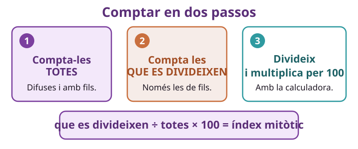

✕
0
Idees prèvies ⏱️ 10 min
Posem en comú els deures. No es corregeix
✏️ 1. Dels deures: què has posat a la targeta de la MITOSI? I a la de la MEIOSI?
Comença la frase així: «A la mitosi hi he posat… i a la meiosi…»
✏️ 2. Un metge mira un trosset de teixit al microscopi per saber si hi ha càncer. Què creus que busca?
Comença la frase així: «Crec que busca…»
✕
1
Compta i calcula ⏱️ 40 min
Ets el laboratori: mesura abans i després
✕

✕
Per llegir abans de començar
Rebràs la fitxa d'un pacient amb dues fotos del mateix teixit: una ABANS de prendre el medicament i una DESPRÉS.
A cada foto has de comptar dues coses: quantes cèl·lules hi ha en total, i quantes s'estan dividint (recorda la SA2·S1: les que tenen fils foscos).
Amb aquests dos números surt l'índex mitòtic: el tant per cent de cèl·lules que s'estan dividint.
A cada foto has de comptar dues coses: quantes cèl·lules hi ha en total, i quantes s'estan dividint (recorda la SA2·S1: les que tenen fils foscos).
Amb aquests dos números surt l'índex mitòtic: el tant per cent de cèl·lules que s'estan dividint.
✕
🧮 que es divideixen ÷ totes × 100 = índex mitòtic
✕
Exemple ja fet
En una foto hi ha 50 cèl·lules en total i 10 s'estan dividint.
A la calculadora: 10 ÷ 50 = 0,2 → 0,2 × 100 = 20.
L'índex mitòtic és 20 %.
A la calculadora: 10 ÷ 50 = 0,2 → 0,2 × 100 = 20.
L'índex mitòtic és 20 %.
Ara fes-ho tu amb la teva fitxa de pacient. Omple una columna cada vegada, de dalt a baix.
| Què has de comptar | Foto ABANS | Foto DESPRÉS |
|---|---|---|
| a) Cèl·lules en total | ||
| b) Cèl·lules que es divideixen (fils foscos) | ||
| c) Fes b ÷ a a la calculadora | ||
| d) Multiplica el resultat × 100 → índex mitòtic |
🗣️ Amb el teu equip: compareu els dos números que us han sortit. Els teniu tots dos apuntats? Els necessitareu a l'apartat 3.
✕
2
Què volen dir aquests números ⏱️ 20 min
Ha pujat, ha baixat o és igual?
✕
Per llegir abans de començar
Un índex mitòtic alt vol dir que moltes cèl·lules s'estan dividint alhora.
Compte: no sempre és dolent. Hi ha parts del cos que es renoven cada dia i que tenen l'índex alt de manera normal i sana: la pell, l'intestí i la part de dins dels ossos que fabrica la sang.
El que fa sospitar és una altra cosa: que l'índex sigui alt en un lloc del cos on no hauria de ser-ho, o que no baixi quan ja hauria de baixar.
Compte: no sempre és dolent. Hi ha parts del cos que es renoven cada dia i que tenen l'índex alt de manera normal i sana: la pell, l'intestí i la part de dins dels ossos que fabrica la sang.
El que fa sospitar és una altra cosa: que l'índex sigui alt en un lloc del cos on no hauria de ser-ho, o que no baixi quan ja hauria de baixar.
Encercla la resposta bona.
✕
1. Compara els teus dos números. L'índex de DESPRÉS, respecte al d'ABANS…Ha baixat·És igual·Ha pujat
✕
2. Un índex alt vol dir que…Moltes cèl·lules es divideixenoLes cèl·lules són més grosses
✕
3. La pell té l'índex mitòtic alt de manera normal. Això vol dir que…La pell es renova cada diaoTothom té càncer de pell
✕ Completa amb els teus números: abans era % i després és %.
✕
3
Funciona, el medicament? ⏱️ 25 min
El veredicte de l'equip, amb els números al davant
✕
✏️ El mètode El teu pacient
El mètode: 👁️ Observo → ❓ Em pregunto → 🔗 Connecto → 💡 Dedueixo
1
👁️ Observo
Què he mesurat, exactament?
Quantes cèl·lules es divideixen, de cada 100
Com són de grosses les cèl·lules
2
❓ Em pregunto
Què hauria de passar si el medicament frena la divisió?
Que l'índex de després sigui més baix
Que l'índex de després sigui més alt
3
🔗 Connecto
I els teus números, què diuen?
El meu índex ha baixat
El meu índex no ha baixat
💡 Dedueixo
✏️ Escriu el veredicte amb els dos números a dins. Comença així: «El medicament… perquè l'índex ha passat de … % a … %.»
✕
Si dubtes
Si l'índex ha baixat clarament → el medicament funciona. Si ha pujat o s'ha quedat igual → no funciona. No cal res més.
✕
4
Per què el càncer no para ⏱️ 15 min
I per què el tractament cansa tant
✕
Per llegir abans de començar
Una cèl·lula sana té un fre: quan ja n'hi ha prou, s'atura. En una cèl·lula amb càncer, aquest fre està espatllat i no para mai.
El medicament contra el càncer atura les cèl·lules que es divideixen molt. El problema és que no sap distingir-les: també atura les sanes que es divideixen molt, com les de la pell, el cabell i l'intestí. Per això als tractaments sovint cau el cabell i es passa mal de panxa.
El medicament contra el càncer atura les cèl·lules que es divideixen molt. El problema és que no sap distingir-les: també atura les sanes que es divideixen molt, com les de la pell, el cabell i l'intestí. Per això als tractaments sovint cau el cabell i es passa mal de panxa.
✕
1. A una cèl·lula amb càncer, què li falla?El fre que la fa aturaroLa membrana de fora
✕
2. Per què cau el cabell durant el tractament?Perquè el medicament també atura les cèl·lules sanes que es divideixen moltoPerquè el medicament tenyeix el cabell
✏️ Torna al principi: què compta exactament un laboratori per saber si un medicament funciona?
Comença la frase així: «Compta quantes cèl·lules… i després…»
✕
🧠 Metacognició — 3 min
✕
📚 Feina per a casa — per a la Sessió 4
✕
1
📋 Copia en net el veredicte de l'apartat 3, amb els dos números a dins. A la propera sessió el faràs servir.